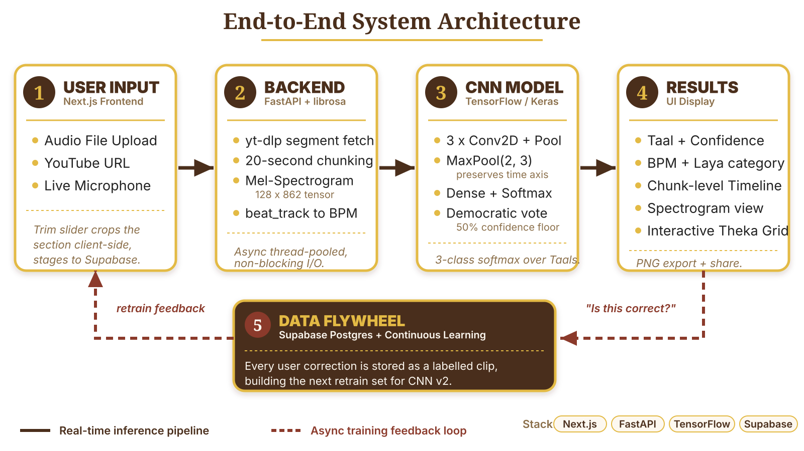
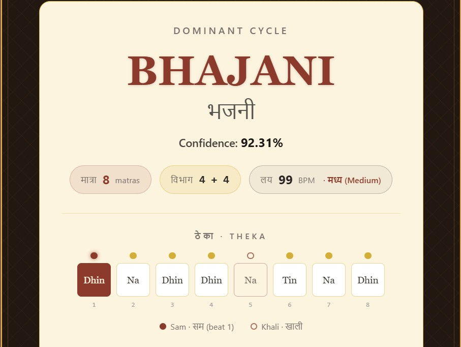

Problem Statement
- Ear-Training Barrier: Based on 18 years of Tabla experience, Taal identification requires massive ear-training, acting as a steep barrier for students.
- Acoustic Obstacle: Acoustic noise (i.e. vocal timbres and instruments) overlapping the percussion makes beat detection difficult.

Solution
- Vision Approach: Map rhythm to 2D mel-spectrograms; CNN sidesteps vocal bleed.
- Time-Aware CNN: MaxPool(2,3) preserves beat structure along the time axis.
- Chunk Voting: 20s segments vote; sub-50% scores are discarded.
Challenges & Lessons Learned
1
13-point train–val gap exposed CNN overfitting
2
Free-tier CPU hosting limits live inference
3
No public Taal data — hand labeling was the bottleneck
4
Vocal bleed breaks beat detection — mel images required
Key Features

Taal Name
Names the dominant rhythm cycle with a confidence score
Theka
Beat-by-beat grid showing Sam, Khali, and bols
Timeline
Color-coded map of how Taal shifts across the song
Tempo
BPM plus laya category (slow, medium, or fast)
Future Scope
- Premium Cloud Deployment: Host the full CNN on a paid inference subscription (like Render) so the heavy model runs reliably for live users.
- Fast Taal Expansion: Reuse the trained CNN and fine-tune only the final layer to add new rhythms in hours, not weeks.